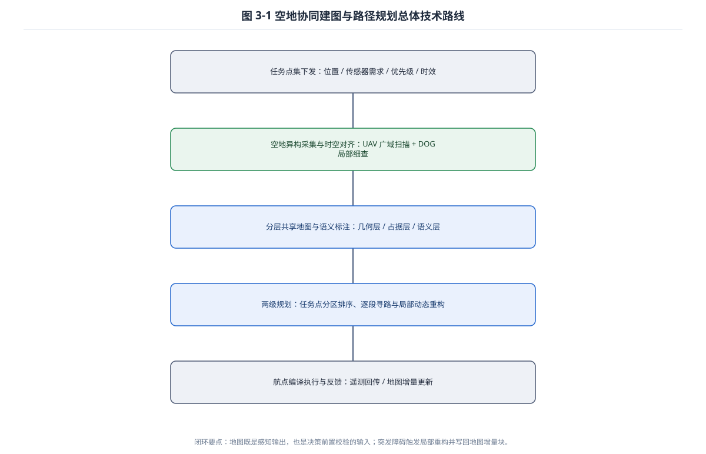
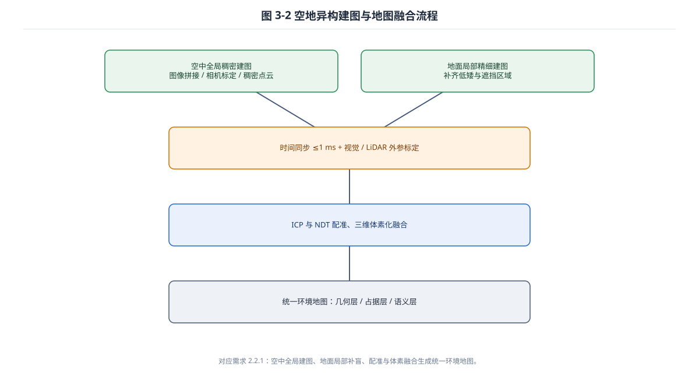
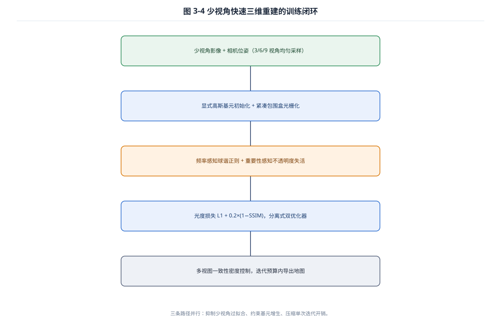
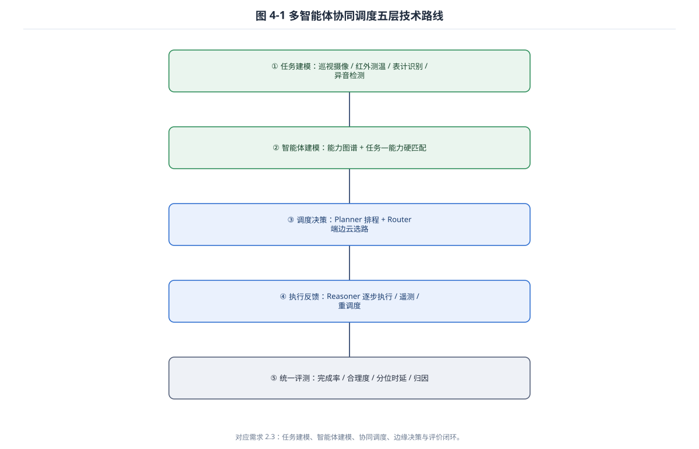
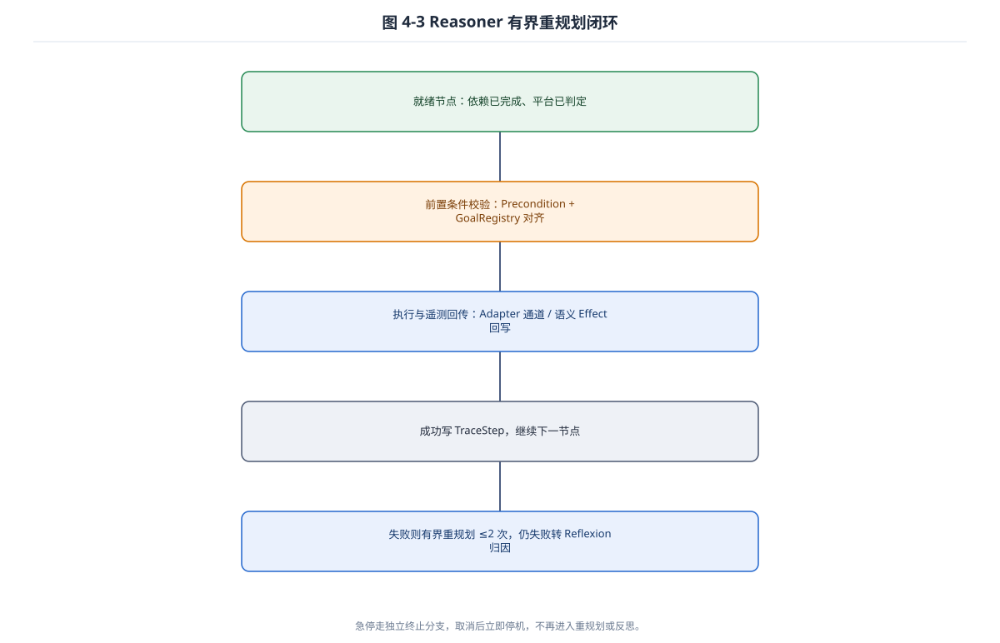

图 3-1 空地协同建图与路径规划总体技术路线

闭环要点：地图既是感知输出，也是决策前置校验的输入；突发障碍触发局部重构并写回地图增量块。
图 3-2 空地异构建图与地图融合流程

对应需求 2.2.1：空中全局建图、地面局部补盲、配准与体素融合生成统一环境地图。
图 3-4 少视角快速三维重建的训练闭环

三条路径并行：抑制少视角过拟合、约束基元增生、压缩单次迭代开销。
图 4-1 多智能体协同调度五层技术路线

对应需求 2.3：任务建模、智能体建模、协同调度、边缘决策与评价闭环。
图 4-3 Reasoner 有界重规划闭环

急停走独立终止分支，取消后立即停机，不再进入重规划或反思。